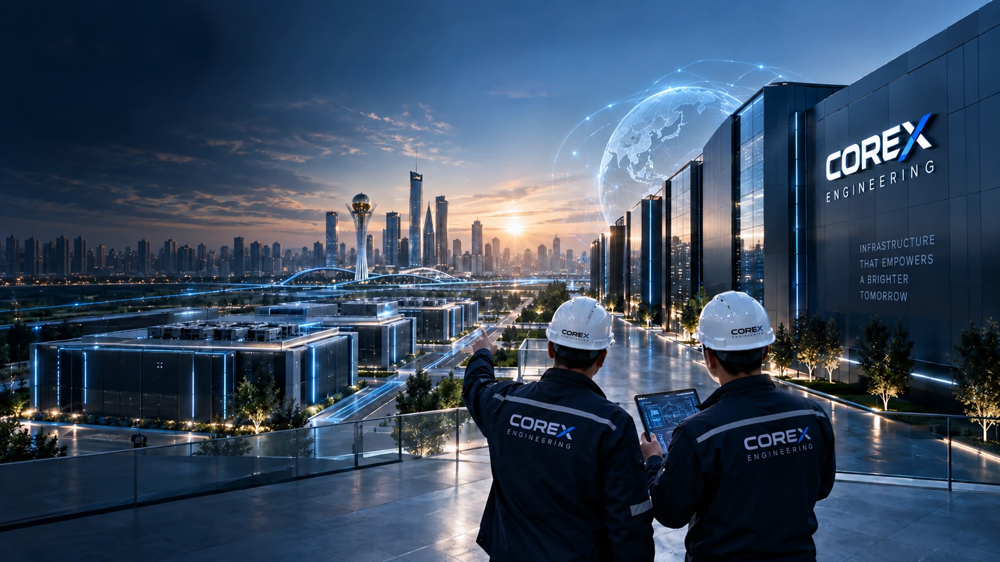
01 / 05 Data centre engineering
Building infrastructure
for a digital future
We bring power, cooling and monitoring together for business and AI. From technical concept to commissioning and maintenance.

01 / 05 Data centre engineering
We bring power, cooling and monitoring together for business and AI. From technical concept to commissioning and maintenance.
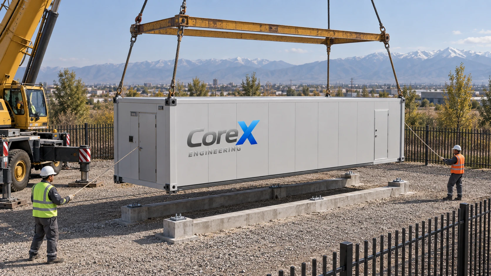
02 / 05 Planning
We calculate load and redundancy before equipment procurement, grounding your budget in business needs and site capabilities.
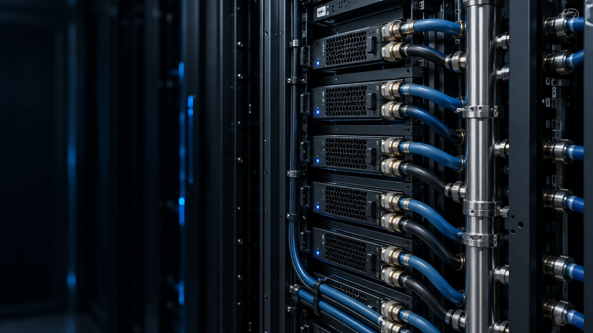
03 / 05 Density
Cold plates, CDUs and immersion cooling tailored to GPU server requirements. An engineering foundation for high-density computing.
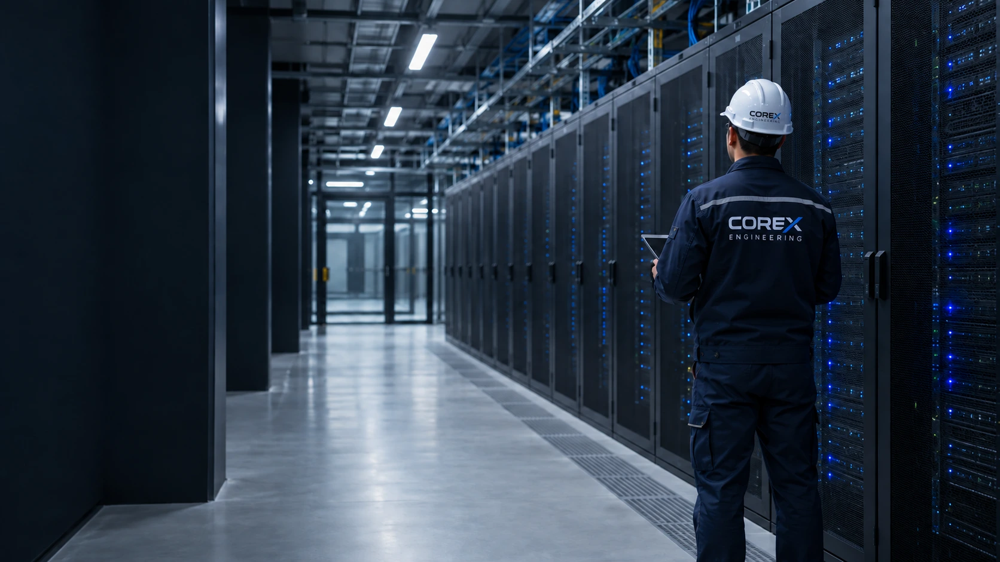
04 / 05 Operations
Scheduled Coolnet maintenance and diagnostics help detect issues before failures and plan upgrades based on system condition.
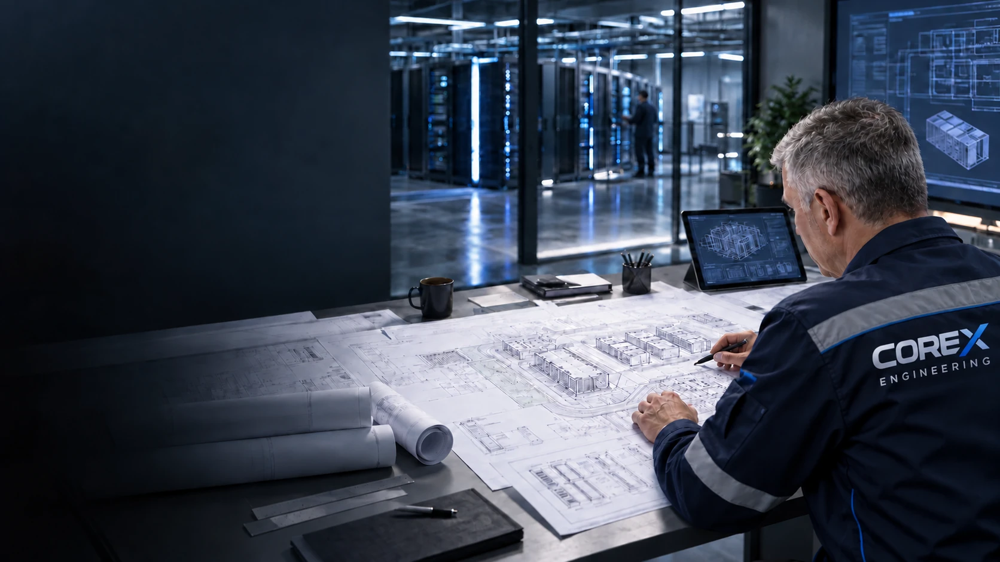
05 / 05 Next step
Tell us your IT load and growth plans. We will define initial requirements, system scope and the next project stage.
Launching a site, adding capacity, upgrading systems or building an AI cluster? Choose the challenge your infrastructure needs to address.
Coordinate power, cooling and monitoring before construction so that all systems work together.
Assess available capacity and accommodate new racks with site operations and redundancy in mind.
Identify system constraints and focus investment on equipment that limits growth or increases risk.
Match heat rejection and power supply to GPU servers so infrastructure does not constrain computing.
CoreX Engineering is a data centre engineering integrator in Kazakhstan and a Coolnet partner. Our team of 25 in-house specialists brings IT load, power and cooling into one project: from concept and direct supply to installation, commissioning and service.
We document the scope of work, connection points and responsibilities, giving the client a basis for managing budgets, deliveries and site readiness.
We match equipment to current demand, redundancy and growth plans. This helps phase investment as the data centre develops.
We plan equipment access, switching sequences and maintenance windows. The operations team knows in advance how to maintain and expand the systems.
Each stage delivers a defined outcome: requirements, documentation, installed systems, test records or a maintenance plan.
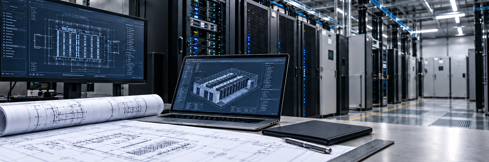
We assess IT load, site resources and redundancy, then develop a technical concept as the basis for budgeting and equipment selection.
We develop power, cooling and monitoring diagrams and specifications. Interfaces are agreed before installation to reduce rework.
We supply and install equipment to the project specification, checking completeness and connections before testing begins.
We configure and test systems against an agreed programme. Test results support client acceptance and commissioning.
We maintain systems to prescribed procedures and assess their condition and load growth, planning upgrades before equipment becomes a constraint.
Manufacturer qualifications for installing, commissioning and maintaining precision air conditioners and modular UPS systems.
Coolnet authorisation confirms that CoreX Engineering provides service in accordance with the manufacturer's procedures.
Precision in every connection.
From configuration to operation.
Manufacturer procedures at every step.
Certificates issued on 6 March 2026.
We select a compatible configuration, not just individual devices. Capacity, redundancy and maintenance determine the total cost of ownership.

Room cooling with airflow options suited to the layout, helping maintain stable server operating conditions.
Explore this solution
Cooling close to the heat source shortens the airflow path. Capacity control accommodates changing loads.
Explore this solution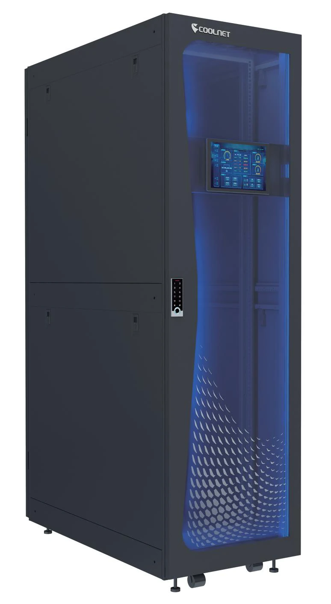
Power, cooling and monitoring in a single cabinet for IT loads in limited space.
View in catalogue (PDF)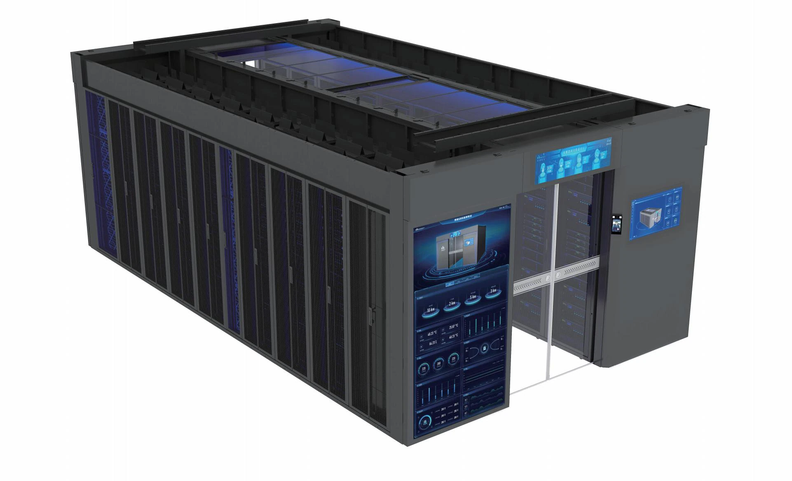
Racks and infrastructure in one module, enabling site expansion in separate blocks.
View in catalogue (PDF)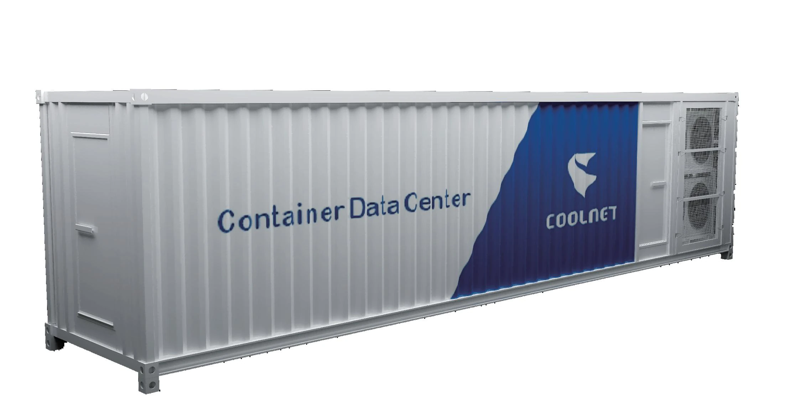
A factory-built data centre for outdoor deployment. Pre-assembly and testing reduce work on the prepared site.
Explore this solution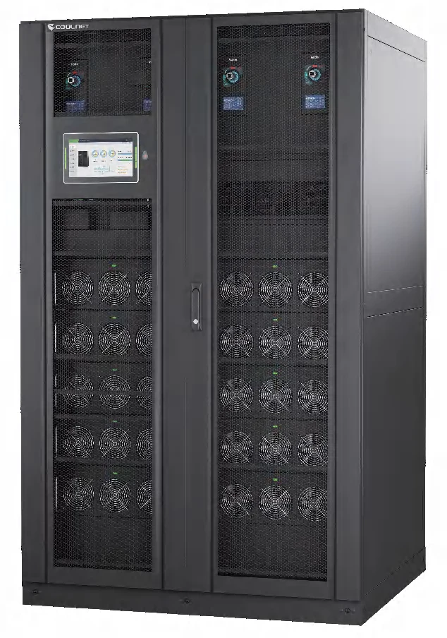
Modular architecture and hot swapping simplify maintenance. Capacity and redundancy are selected for the load and growth plan.
Explore this solution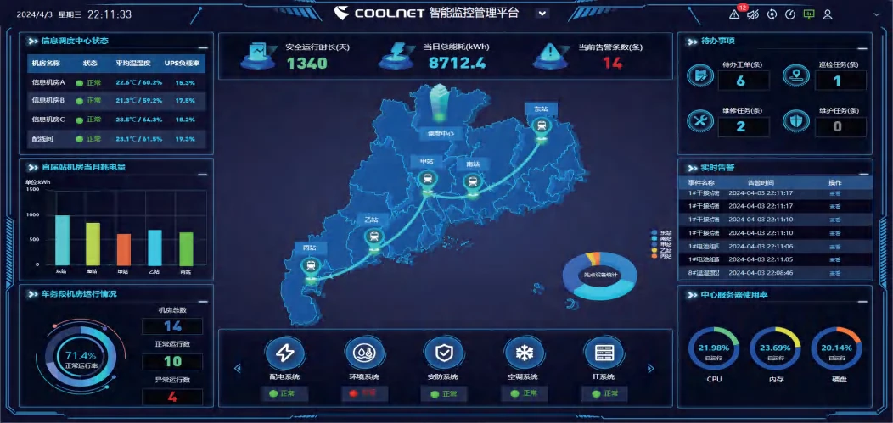
Power, cooling and environmental data in one interface to monitor deviations and plan data centre resources.
Explore this solution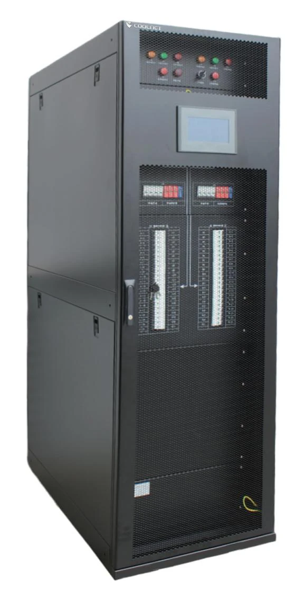
Power distribution and electrical metering help monitor circuit loads and consumption.
Explore this solution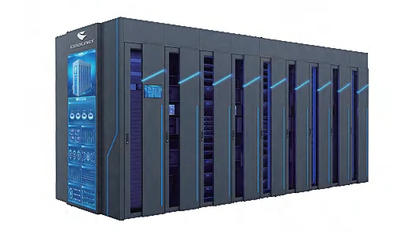
An infrastructure module for compute racks. Power and cooling are coordinated in one configuration; the components are shown in the Coolnet catalogue.
View in catalogue (PDF)Yes. Tell us the data centre's purpose, location and current or planned IT load. During pre-sales, we clarify the inputs and develop a technical concept for subsequent calculations.
Yes. We can select cooling, UPS, power distribution or monitoring for a specific requirement. Connection and compatibility checks help avoid buying equipment unsuitable for the existing site.
Yes. An audit identifies spare capacity and system constraints. Switching sequences and maintenance windows are agreed with the operations team; whether expansion is possible without shutdown depends on the data centre design.
IT capacity, rack density, redundancy, external connections and scope of supply. A phased configuration aligns investment with load growth. Timing also depends on site readiness and deliveries.
For Coolnet equipment, we prepare preventive maintenance and diagnostic procedures and agree warranty and post-warranty work. Support hours, response times and SLAs for round-the-clock operation are agreed separately in the contract.
Planning a new data centre, expansion or AI cluster? Tell us your site, IT load and schedule. An engineer will clarify redundancy and connections so we can prepare a configuration and commercial proposal.
You can email us directly: info@corexengineering.kz